![A Figure]()
Some possible rectangles that satisfy the constraint on the perimeter and their area.
This section uses these add-on packages:
using CalculusWithJulia
using Plots
using Roots
using SymPyA basic application of calculus is to answer questions which relate to the largest or smallest a function can be given some constraints.
For example,
Of all rectangles with perimeter \(20\), which has of the largest area?
The main tool is the extreme value theorem of Bolzano and Fermat’s theorem about critical points, which combined say:
If the function \(f(x)\) is continuous on \([a,b]\) and differentiable on \((a,b)\), then the extrema exist and must occur at either an end point or a critical point.
Though not all of our problems lend themselves to a description of a continuous function on a closed interval, if they do, we have an algorithmic prescription to find the absolute extrema of a function:
find_zero.With the computer we can take some shortcuts, as we will be able to graph our function to see where the extreme values will be, and in particular if they occur at end points or critical points.
The simplest way to investigate the maximum or minimum value of a function over a closed interval is to just graph it and look.
We began with the question of which rectangles of perimeter \(20\) have the largest area? The figure shows a few different rectangles with this perimeter and their respective areas.
Some possible rectangles that satisfy the constraint on the perimeter and their area.
The basic mathematical approach is to find a function of a single variable to maximize or minimize. In this case we have two variables describing a rectangle: a base \(b\) and height \(h\). Our formulas are the area of a rectangle:
\[ A = bh, \]
and the formula for the perimeter of a rectangle:
\[ P = 2b + 2h = 20. \]
From this last one, we see that \(b\) can be no bigger than \(10\) and no smaller than \(0\) from the restriction put in place through the perimeter. Solving for \(h\) in terms of \(b\) then yields this restatement of the problem:
Maximize \(A(b) = b \cdot (10 - b)\) over the interval \([0,10]\).
This is exactly the form needed to apply our theorem about the existence of extrema (a continuous function on a closed interval). Rather than solve analytically by taking a derivative, we simply graph to find the value:
Area(b) = b * (10 - b)
plot(Area, 0, 10)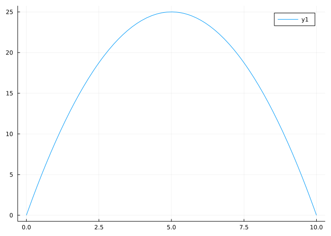
You should see the maximum occurs at \(b=5\) by symmetry, so \(h=5\) as well, and the maximum area is then \(25\). This gives the satisfying answer that among all rectangles of fixed perimeter, that with the largest area is a square. As well, this indicates a common result: there is often some underlying symmetry in the answer.
Before moving on, let’s see a slightly different way to do this problem with Julia, where we trade off some algebra for a bit of abstraction. This technique was discussed in the section on functions.
Let’s first write area as a function of both base and height:
A(b, h) = b * hA (generic function with 1 method)From the constraint given by the perimeter being a fixed value we can solve for h in terms of b. We write this as a function:
h(b) = (20 - 2b) / 2h (generic function with 1 method)To get A(b) we simply need to substitute h(b) into our formula for the area, A. However, instead of doing the substitution ourselves using algebra we let Julia do it through composition of functions:
A(b) = A(b, h(b))A (generic function with 2 methods)Now we can solve graphically as before, or numerically, such as here where we search for zeros of the derivative:
find_zeros(A', 0, 10) # find_zeros in `Roots`,1-element Vector{Float64}:
5.0(As a reminder, the notation A' is defined in CalculusWithJulia using the derivative function from the ForwardDiff package.)
Look at the last definition of A. The function A appears on both sides, though on the left side with one argument and on the right with two. These are two “methods” of a generic function, A. Julia allows multiple definitions for the same name as long as the arguments (their number and type) can disambiguate which to use. In this instance, when one argument is passed in then the last defintion is used (A(b,h(b))), whereas if two are passed in, then the method that multiplies both arguments is used. The advantage of multiple dispatch is illustrated: the same concept - area - has one function name, though there may be different ways to compute the area, so there is more than one implementation.
Here is a similar, though more complicated, example where the analytic approach can be a bit more tedious, but the graphical one mostly satisfying, though we do use a numerical algorithm to find an exact final answer.
Let a “Norman” window consist of a rectangular window of top length \(x\) and side length \(y\) and a half circle on top. The goal is to maximize the area for a fixed value of the perimeter. Again, assume this perimeter is \(20\) units.
This figure shows two such windows, one with base length given by \(x=3\), the other with base length given by \(x=4\). The one with base length \(4\) seems to have much bigger area, what value of \(x\) will lead to the largest area?
For this problem, we have two equations.
The area is the area of the rectangle plus the area of the half circle (\(\pi r^2/2\) with \(r=x/2\)).
\[ A = xy + \pi(x/2)^2/2 \]
In Julia this is
Aᵣ(x, y) = x*y + pi*(x/2)^2 / 2Aᵣ (generic function with 1 method)The perimeter consists of \(3\) sides of the rectangle and the perimeter of half a circle (\(\pi r\), with \(r=x/2\)):
\[ P = 2y + x + \pi(x/2) = 20 \]
We solve for \(y\) in the first with \(y = (20 - x - \pi(x/2))/2\) so that in Julia we have:
y(x) = (20 - x - pi * x/2) / 2y (generic function with 1 method)And then we substitute in y(x) for y in the area formula through:
Aᵣ(x) = Aᵣ(x, y(x))Aᵣ (generic function with 2 methods)Of course both \(x\) and \(y\) are non-negative. The latter forces \(x\) to be no more than \(x=20/(1+\pi/2)\).
This leaves us the calculus problem of finding an absolute maximum of a continuous function over the closed interval \([0, 20/(1+\pi/2)]\). Our theorem tells us this maximum must occur, we now proceed to find it.
We begin by simply graphing and estimating the values of the maximum and where it occurs.
plot(Aᵣ, 0, 20/(1+pi/2))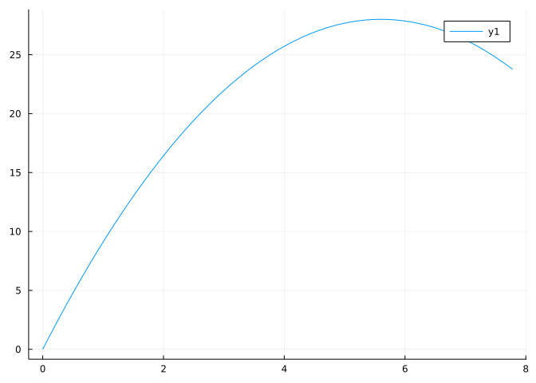
The naked eye sees that maximum value is somewhere around \(27\) and occurs at \(x\approx 5.6\). Clearly from the graph, we know the maximum value happens at the critical point and there is only one such critical point.
As reading the maximum from the graph is more difficult than reading a \(0\) of a function, we plot the derivative using our approximate derivative.
plot(Aᵣ', 5.5, 5.7)We confirm that the critical point is around \(5.6\).
find_zero to locate critical points.Rather than zoom in graphically, we now use a root-finding algorithm, to find a more precise value of the zero of \(A'\). We know that the maximum will occur at a critical point, a zero of the derivative. The find_zero function from the Roots package provides a non-linear root-finding algorithm based on the bisection method. The only thing to keep track of is that solving \(f'(x) = 0\) means we use the derivative and not the original function.
We see from the graph that \([0, 20/(1+\pi/2)]\) will provide a bracket, as there is only one relative maximum:
x′ = find_zero(Aᵣ', (0, 20/(1+pi/2)))5.600991535115574This value is the lone critical point, and in this case gives the position of the value that will maximize the function. The value and maximum area are then given by:
(x′, Aᵣ(x′))(5.600991535115574, 28.004957675577867)(Compare this answer to the previous, is the square the figure of greatest area for a fixed perimeter, or just the figure amongst all rectangles? See Isoperimetric inequality for an answer.)
argmax to identify where a function is maximizedThis value that maximizes a function is sometimes referred to as the argmax, or argument which maximizes the function. In Julia the argmax(f,domain) function is defined to “Return a value \(x\) in the domain of \(f\) for which \(f(x)\) is maximized. If there are multiple maximal values for \(f(x)\) then the first one will be found.” The domain is some iterable collection. In the mathematical world this would be an interval \([a,b]\), but on the computer it is an approximation, such as is returned by range below. Without out having to take a derivative, as above, but sacrificing some accuracy, the task of identifying x for where A is maximum, could be done with
argmax(Aᵣ, range(0, 20/(1+pi/2), length=10000))5.6011593738142205We could also do the above problem symbolically with the aid of SymPy. Here are the steps:
@syms 𝒘::real 𝒉::real
𝑨₀ = 𝒘 * 𝒉 + pi * (𝒘/2)^2 / 2
𝑷erim = 2*𝒉 + 𝒘 + pi * 𝒘/2
𝒉₀ = solve(𝑷erim - 20, 𝒉)[1]
𝑨₁ = 𝑨₀(𝒉 => 𝒉₀)
𝒘₀ = solve(diff(𝑨₁,𝒘), 𝒘)[1]We know that 𝒘₀ is the maximum in this example from our previous work. We shall see soon, that just knowing that the second derivative is negative at 𝒘₀ would suffice to know this. Here we check that condition:
diff(𝑨₁, 𝒘, 𝒘)(𝒘 => 𝒘₀)As an aside, compare the steps involved above for a symbolic solution to those of previous work for a numeric solution:
Aᵣ(w, h) = w*h + pi*(w/2)^2 / 2
h(w) = (20 - w - pi * w/2) / 2
Aᵣ(w) = A(w, h(w))
find_zero(A', (0, 20/(1+pi/2))) # 40 / (pi + 4)3.8898452964834274They are similar, except we solved for h0 symbolically, rather than by hand, when we solved for h(w).
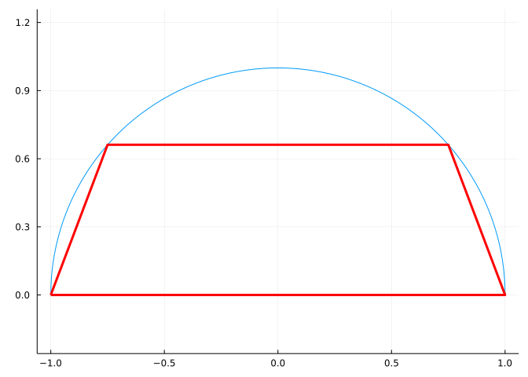
A trapezoid is inscribed in the upper-half circle of radius \(r\). The trapezoid is found be connecting the points \((x,y)\) (in the first quadrant) with \((r, 0)\), \((-r,0)\), and \((-x, y)\). Find the maximum area. (The above figure has \(x=0.75\) and \(r=1\).)
Here the constraint is simply \(r^2 = x^2 + y^2\) with \(x\) and \(y\) being non-negative. The area is then found through the average of the two lengths times the height. Using height for y, we have:
@syms x::positive r::positive
hₜ = sqrt(r^2 - x^2)
aₜ = (2x + 2r)/2 * hₜ
possible_sols = solve(diff(aₜ, x) ~ 0, x) # possibly many solutions
x0 = first(possible_sols) # only solution is also found from first or [1] indexingThe other values of interest can be found through substitution. For example:
hₜ(x => x0)Many maximization and minimization problems involve triangles, which in turn use trigonometry in their description. Here is an example, the “ladder corner problem.” (There are many other ladder problems.)
A ladder is to be moved through a two-dimensional hallway which has a bend and gets narrower after the bend. The hallway is \(8\) feet wide then \(5\) feet wide. What is the longest such ladder that can be navigated around the corner?
The figure shows a ladder of length \(l_1 + l_2\) that got stuck - it was too long.
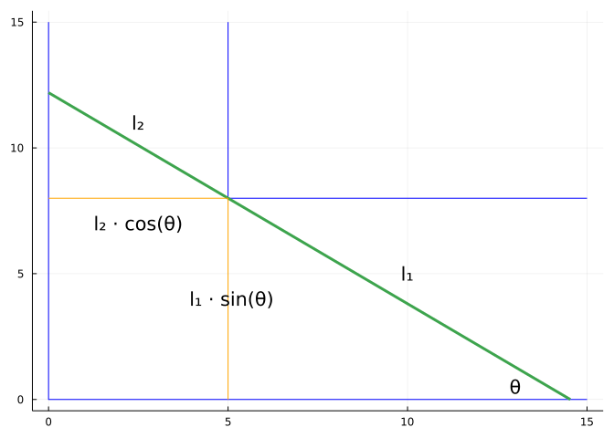
We approach this problem in reverse. It is easy to see when a ladder is too long. It gets stuck at some angle \(\theta\). So for each \(\theta\) we find that ladder length that is just too long. Then we find the minimum length of all these ladders that are too long. If a ladder is this length or more it will get stuck for some angle. However, if it is less than this length it will not get stuck. So to maximize a ladder length, we minimize a different function. Neat.
Now, to find the length \(l = l_1 + l_2\) as a function of \(\theta\).
We need to brush off our trigonometry, in particular right triangle trigonometry. We see from the figure that \(l_1\) is the hypotenuse of a right triangle with opposite side \(8\) and \(l_2\) is the hypotenuse of a right triangle with adjacent side \(5\). So, \(8/l_1 = \sin\theta\) and \(5/l_2 = \cos\theta\).
That is, we have
l(l1, l2) = l1 + l2
l1(t) = 8/sin(t)
l2(t) = 5/cos(t)
l(t) = l(l1(t), l2(t)) # or simply l(t) = 8/sin(t) + 5/cos(t)l (generic function with 2 methods)Our goal is to minimize this function for all angles between \(0\) and \(90\) degrees, or \(0\) and \(\pi/2\) radians.
This is not a continuous function on a closed interval - it is undefined at the endpoints. That being said, a quick plot will convince us that the minimum occurs at a critical point and there is only one critical point in \((0, \pi/2)\).
delta = 0.2
plot(l, delta, pi/2 - delta)The graph shows the minimum occurs between \(0.50\) and \(1.00\) radians, a bracket for the derivative. Here we find \(x\) and the minimum value:
x = find_zero(l', (0.5, 1.0))
x, l(x)(0.8634136052517809, 18.219533699708656)That is, any ladder less than this length can get around the hallway.
Ethan Hunt, a top secret spy, has a mission to chase a bad guy. Here is what we know:
For his mission, he needs to go \(10\) miles west and \(5\) `miles north. He can do this by:
A quick analysis says:
Now, if he drives \(x\) miles west (\(0 < x < 10\)) he would run an amount given by the hypotenuse of a triangle with lengths \(5\) and \(10-x\). His time driving would be \(x/30\) and his time running would be \(\sqrt{5^2+(10-x)^2}/10\) for a total of:
\[ T(x) = x/30 + \sqrt{5^2 + (10-x)^2}/10, \quad 0 < x < 10 \]
With the endpoints given by \(T(0) = \sqrt{10^2 + 5^2}/10\) and \(T(10) = (10 + 5)/30\).
Let’s plot \(T(x)\) over the interval \((0,10)\) and look:
T(x) = x/30 + sqrt(5^2 + (10-x)^2)/10T (generic function with 1 method)plot(T, 0, 10)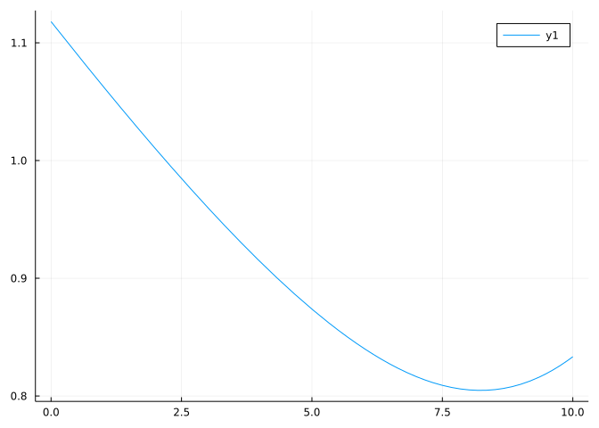
The minimum happens way out near 8. We zoom in a bit:
plot(T, 7, 9)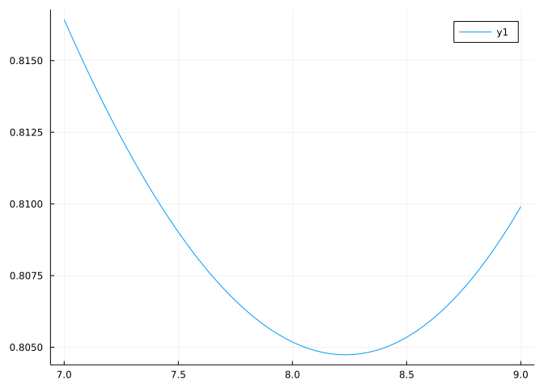
It appears to be around \(8.3\). We now use find_zero to refine our guess at the critical point using \([7,9]\):
α = find_zero(T', (7, 9))8.232233047033631Okay, got it. Around\(8.23\). So is our minimum time
T(α)0.804737854124365We know this is a relative minimum, but not that it is the global minimum over the closed time interlal. For that we must also check the endpoints:
sqrt(10^2 + 5^2)/10, T(α), (10+5)/30(1.118033988749895, 0.804737854124365, 0.5)Ahh, we see that \(T(x)\) is not continuous on \([0, 10]\), as it jumps at \(x=10\) down to an even smaller amount of \(1/2\). It may not look as impressive as a miles-long sprint, but Mr. Hunt is advised by Benji to drive the whole way.
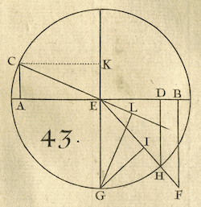
The last example is a modern day illustration of a problem of calculus dating back to l’Hospital. His parameterization is a bit different. Let’s change his by taking two points \((0, a)\) and \((L,-b)\), with \(a,b,L\) positive values. Above the \(x\) axis travel happens at rate \(r_0\), and below, travel happens at rate \(r_1\), again, both positive. What value \(x\) in \([0,L]\) will minimize the total travel time?
We approach this symbolically with SymPy:
@syms x::positive a::positive b::positive L::positive r0::positive r1::positive
d0 = sqrt(x^2 + a^2)
d1 = sqrt((L-x)^2 + b^2)
t = d0/r0 + d1/r1 # time = distance/rate
dt = diff(t, x) # look for critical pointsThe answer will occur at a critical point or an endpoint, either \(x=0\) or \(x=L\).
The structure of dt is too complicated for simply calling solve to find the critical points. Instead we help SymPy out a bit. We are solving an equation of the form \(a/b + c/d = 0\). These solutions will also be solutions of \((a/b)^2 - (c/d)^2=0\) or even \(a^2d^2 - c^2b^2 = 0\). This follows as solutions to \(u+v=0\), also solve \((u+v)\cdot(u-v)=0\), or \(u^2 - v^2=0\). Setting \(u=a/b\) and \(v=c/d\) completes the comparison.
We can get these terms - \(a\), \(b\), \(c\), and \(d\) - as follows:
t1, t2 = dt.args # the `args` property returns the arguments to the outer function (+ in this case)(x/(r0*sqrt(a^2 + x^2)), (-L + x)/(r1*sqrt(b^2 + (L - x)^2)))The equivalent of \(a^2d^2 - c^2 b^2\) is found using the generic functions numerator and denominator to access the numerator and denominator of the fractions:
ex = numerator(t1^2)*denominator(t2^2) - denominator(t1^2)*numerator(t2^2)This is a polynomial in the x variable of degree \(4\), as seen here where the sympy.Poly function is used to identify the symbols of the polynomial from the parameters:
p = sympy.Poly(ex, x) # a0 + a1⋅x + a2⋅x^2 + a3⋅x^3 + a4⋅x^4
p.coeffs()5-element Vector{Sym}:
-r0^2 + r1^2
2*L*r0^2 - 2*L*r1^2
-L^2*r0^2 + L^2*r1^2 - a^2*r0^2 + b^2*r1^2
2*L*a^2*r0^2
-L^2*a^2*r0^2Fourth degree polynomials can be solved. The critical points of the original equation will be among the \(4\) solutions given. However, the result is complicated. The article – from which the figure came – states that “In today’s textbooks the problem, usually involving a river, involves walking along one bank and then swimming across; this corresponds to setting \(g=0\) in l’Hospital’s example, and leads to a quadratic equation.” Let’s see that case, which we can get in our notation by taking \(b=0\):
q = ex(b=>0)
factor(q)We see two terms: one with \(x=L\) and another quadratic. For the simple case \(r_0=r_1\), a straight line is the best solution, and this corresponds to \(x=L\), which is clear from the formula above, as we only have one solution to the following:
solve(q(r1=>r0), x)1-element Vector{Sym}:
LWell, not so fast. We need to check the other endpoint, \(x=0\):
ta = t(b=>0, r1=>r0)
ta(x=>0), ta(x=>L)(L/r0 + a/r0, sqrt(L^2 + a^2)/r0)The value at \(x=L\) is smaller, as \(L^2 + a^2 \leq (L+a)^2\). (Well, that was a bit pedantic. The travel rates being identical means the fastest path will also be the shortest path and that is clearly \(x=L\) and not \(x=0\).)
Now, if, say, travel above the line is half as slow as travel along, then \(2r_0 = r_1\), and the critical points will be:
out = solve(q(r1 => 2r0), x)2-element Vector{Sym}:
L
sqrt(3)*a/3It is hard to tell which would minimize time without more work. To check a case (\(a=1, L=2, r_0=1\)) we might have
x_straight = t(r1 =>2r0, b=>0, x=>out[1], a=>1, L=>2, r0 => 1) # for x=LCompared to the smaller (\(x=\sqrt{3}a/3\)):
x_angle = t(r1 =>2r0, b=>0, x=>out[2], a=>1, L=>2, r0 => 1)What about \(x=0\)?
x_bent = t(r1 =>2r0, b=>0, x=>0, a=>1, L=>2, r0 => 1)The value of \(x=\sqrt{3}a/3\) minimizes time:
min(x_straight, x_angle, x_bent)The traveler in this case is advised to head to the \(x\) axis at \(x=\sqrt{3}a/3\) and then travel along the \(x\) axis.
Will this approach always be true? Consider different parameters, say we switch the values of \(a\) and \(L\) so \(a > L\):
pts = [0, out...]
m,i = findmin([t(r1 =>2r0, b=>0, x=>u, a=>2, L=>1, r0 => 1) for u in pts]) # min, index
m, pts[i](sqrt(5), L)Here traveling directly to the point \((L,0)\) is fastest. Though travel is slower, the route is more direct and there is no time saved by taking the longer route with faster travel for part of it.
Maximize the function \(xe^{-(1/2) x^2}\) over the interval \([0, \infty)\).
Here the extreme value theorem doesn’t technically apply, as we don’t have a closed interval. However, if we can eliminate the endpoints as candidates, then we should be able to convince ourselves the maximum must occur at a critical point of \(f(x)\). (If not, then convince yourself for all sufficiently large \(M\) the maximum over \([0,M]\) occurs at a critical point, not an endpoint. Then let \(M\) go to infinity. In general, for an optimization problem of a continuous function on the interval \((a,b)\) if the right limit at \(a\) and left limit at \(b\) can be ruled out as candidates, the optimal value must occur at a critical point.)
So to approach this problem we first graph it over a wide interval.
f(x) = x * exp(-x^2)
plot(f, 0, 100)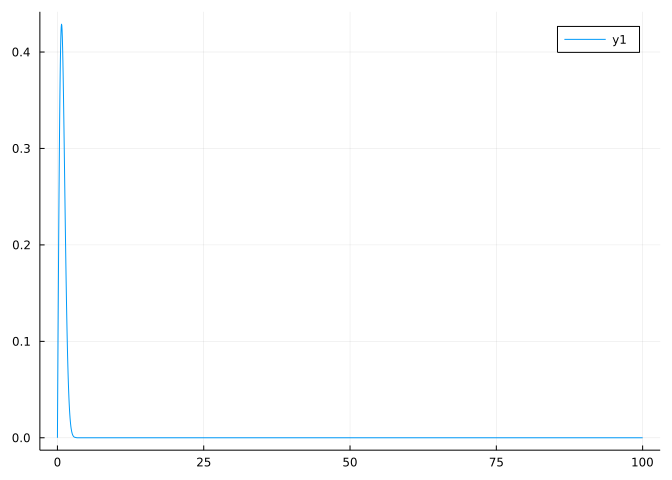
Clearly the action is nearer to \(1\) than \(100\). We try graphing the derivative near that area:
plot(f', 0, 5)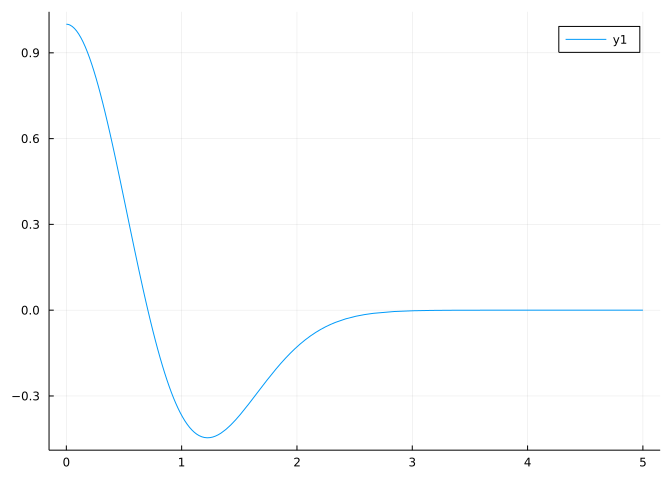
This shows the value of interest near \(0.7\) for a critical point. We use find_zero with \([0,1]\) as a bracket
c = find_zero(f', (0, 1))0.7071067811865476The maximum is then at
f(c)0.42888194248035333For a more applied problem of this type (infinite domain), consider a can of some soft drink that is to contain \(355\)ml which is \(355\) cubic centimeters. We use metric units, as the relationship between volume (cubic centimeters) and fluid amount (ml) is clear. A can to hold this amount is produced in the shape of cylinder with radius \(r\) and height \(h\). The materials involved give the surface area, which would be:
\[ SA = h \cdot 2\pi r + 2 \cdot \pi r^2. \]
The volume satisfies:
\[ V = 355 = h \cdot \pi r^2. \]
Find the values of \(r\) and \(h\) which minimize the surface area.
First the surface area in both variables is given by
SA(h, r) = h * 2pi * r + 2pi * r^2SA (generic function with 1 method)Solving from the constraint on the volume for h in terms of r yields:
canheight(r) = 355 / (pi * r^2)canheight (generic function with 1 method)Composing gives a function of r alone:
SA(r) = SA(canheight(r), r)SA (generic function with 2 methods)This is minimized subject to the constraint that \(r \geq 0\). A quick glance shows that as \(r\) gets close to \(0\), the can must get infinitely tall to contain that fixed volume, and would have infinite surface area as the \(1/r^2\) in the first term implies. On the other hand, as \(r\) goes to infinity, the height must go to \(0\) to make a really flat can. Again, we would have infinite surface area, as the \(r^2\) term at the end indicates. With this observation, we can rule out the endpoints as possible minima, so any minima must occur at a critical point.
We start by making a graph, making an educated guess that the answer is somewhere near a real life answer, or around \(3\)-\(5\) cms in radius:
plot(SA, 2, 10)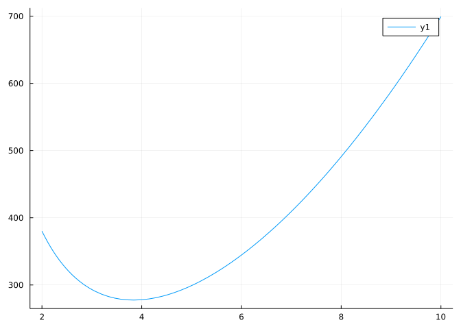
The minimum looks to be around \(4\)cm and is clearly between \(2\)cm and \(6\)cm. We can use find_zero to zero in on the value of the critical point:
rₛₐ = find_zero(SA', (2, 6))3.8372152480156734Okay, \(3.837...\) is our answer for \(r\). Use this to get \(h\):
canheight(rₛₐ)7.674430496031345This produces a can which is about square in profile. This is not how most cans look though. Perhaps our model is too simple, or the cans are optimized for some other purpose than minimizing materials.
A geometric figure has area given in terms of two measurements by \(A=\pi a b\) and perimeter \(P = \pi (a + b)\). If the perimeter is fixed to be 20 units long, what is the maximal area the figure can be?
A geometric figure has area given in terms of two measurements by \(A=\pi a b\) and perimeter \(P=\pi \cdot \sqrt{a^2 + b^2}/2\). If the perimeter is 20 units long, what is the maximal area?
A rancher with \(10\) meters of fence wishes to make a pen adjacent to an existing fence. The pen will be a rectangle with one edge using the existing fence. Say that has length \(x\), then \(10 = 2y + x\), with \(y\) the other dimension of the pen. What is the maximum area that can be made?
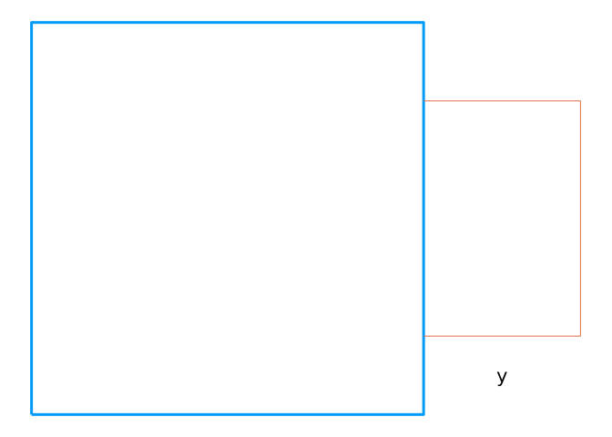
Is there “symmetry” in the answer between \(x\) and \(y\)?
What is you were do do two pens like this back to back, then the answer would involve a rectangle. Is there symmetry in the answer now?
A rectangle of sides \(w\) and \(h\) has fixed area \(20\). What is the smallest perimeter it can have?
A rectangle of sides \(w\) and \(h\) has fixed area \(20\). What is the largest perimeter it can have?
A cardboard box is to be designed with a square base and an open top holding a fixed volume \(V\). What dimensions yield the minimal surface area?
If this problem were approached symbolically, we might see the following code. First:
@syms V::positive x::positive z::positive
SA = 1 * x * x + 4 * x * zWhat does this express?
What does this command express?
SA = subs(SA, z => V / x^2)What does this command find?
solve(diff(SA, x) ~ 0, x)What do these commands do?
cps = solve(diff(SA, x) ~ 0, x)
xx = filter(isreal, cps)[1]
diff(SA, x, x)(xx) > 0A rain gutter is constructed from a 30” wide sheet of tin by bending it into thirds. If the sides are bent 90 degrees, then the cross-sectional area would be \(100 = 10^2\). This is not the largest possible amount. For example, if the sides are bent by 45 degrees, the cross sectional area is:
120.71067811865474Find a value in degrees that gives the maximum. (The first task is to write the area in terms of \(\theta\).
Suppose our new “Norman” window has half circular tops at the top and bottom? If the perimeter is fixed at \(20\) and the dimensions of the rectangle are \(x\) for the width and \(y\) for the height.
What is the value of \(y\) that maximizes the area?
A movie screen projects on a wall 20 feet high beginning 10 feet above the floor. This figure shows \(\theta\) for \(x=30\):
What value of \(x\) gives the largest angle \(\theta\)? (In degrees.)
A maximum likelihood estimator is a value derived by maximizing a function. For example, if
Likhood(t) = t^3 * exp(-3t) * exp(-2t) * exp(-4t) ## 0 <= t <= 10Likhood (generic function with 1 method)Then Likhood(t) is continuous and has single peak, so the maximum occurs at the lone critical point. It turns out that this problem is bit sensitive to an initial condition, so we bracket
find_zero(Likhood', (0.1, 0.5))0.3333333333333333Now if \(Likhood(t) = \exp(-3t) \cdot \exp(-2t) \cdot \exp(-4t), \quad 0 \leq t \leq 10\), by graphing, explain why the same approach won’t work:
Let \(x_1\), \(x_2\), \(x_n\) be a set of unspecified numbers in a data set. Form the expression \(s(x) = (x-x_1)^2 + \cdots (x-x_n)^2\). What is the smallest this can be (in \(x\))?
We approach this using SymPy and \(n=10\)
@syms s xs[1:10]
s(x) = sum((x-xi)^2 for xi in xs)
cps = solve(diff(s(x), x), x)Run the above code. Baseed on the critical points found, what do you guess will be the minimum value in terms of the values \(x_1\), \(x_2, \dots\)?
Minimize the function \(f(x) = 2x + 3/x\) over \((0, \infty)\).
Of all rectangles of area 4, find the one with smallest perimeter. What is the perimeter?
A running track is in the shape of two straight aways and two half circles. The total distance (perimeter) is 400 meters. Suppose \(w\) is the width (twice the radius of the circles) and \(h\) is the height. What dimensions minimize the sum \(w + h\)?
You have \(P(w, h) = 2\pi \cdot (w/2) + 2\cdot(h-w)\).
A cell phone manufacturer wishes to make a rectangular phone with total surface area of 12,000 \(mm^2\) and maximal screen area. The screen is surrounded by bezels with sizes of 8\(mm\) on the long sides and 32\(mm\) on the short sides. (So, for example, the screen width is shorter by \(2\cdot 8\) mm than the phone width.)
What are the dimensions (width and height) that allow the maximum screen area?
The width is:
The height is?
Find the value \(x > 0\) which minimizes the distance from the graph of \(f(x) = \log_e(x) - x\) to the origin \((0,0)\).

The figure above poses a problem about cones in spheres, which can be reduced to a two-dimensional problem. Take a sphere of radius \(r=1\), and imagine a secant line of length \(l\) connecting \((-r, 0)\) to another point \((x,y)\) with \(y>0\). Rotating that line around the \(x\) axis produces a cone and its lateral surface is given by \(SA=\pi \cdot y \cdot l\). Write \(SA\) as a function of \(x\) and solve.
The largest lateral surface area is:
The surface area of a sphere of radius \(1\) is \(4\pi r^2 = 4 \pi\). This is how many times greater than that of the largest cone?
In the examples the functions argmax(f, itr) and findmin(collection) were used. These have mathematical analogs. What is argmax(f,itr) in terms of math notation, where \(vs\) is the iterable collection of values:
The functions are related: findmax returns the maximum value and an index in the collection for which the value will be largest; argmax returns an element of the set for which the function is largest, so argmax(identify, itr) should correspond to the index found by findmax (through itr[findmax(itr)[2])
Let \(f(x) = (a/x)^x\) for \(a,x > 0\). When is this maximized? The following might be helpful
@syms x::positive a::postive
diff((a/x)^x, x)This can be solved to discover the answer.
The ladder problem has an trigonometry-free solution. We show one attributed to Asma.
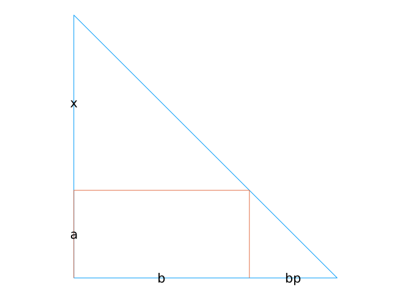
Introducing a variable \(p\), we get, following the above figure, the ladder of length \(c\) touching the wall at \(b+bp\) and \(a + x\).
Using similar triangles, we have:
@syms a::positive b::positive p::positive x::positive
solve(x/b ~ (x+a)/(b + b*p), x)1-element Vector{Sym}:
a/pWith \(x = a/p\) we get by Pythagorean’s theorem that
\[ \begin{align*} c^2 &= (a + a/p)^2 + (b + bp)^2 \\ &= a^2(1 + \frac{1}{p})^2 + b^2(1+p)^2. \end{align*} \]
The ladder problem minimizes \(c\) or equivalently \(c^2\).
Why is the following set of commands useful in this task:
c2 = a^2*(1 + 1/p)^2 + b^2*(1+p)^2
c2p = diff(c2, p)
eq = numer(together(c2p))
solve(eq ~ 0, p)The polynomial nu is what degree in p?
The only positive real solution for \(p\) from \(nu\) is
In Hall we can find a dozen optimization problems related to the following figure of the parabola \(y=x^2\) a point \(P=(a,a^2)\), \(a > 0\), and its normal line. We will do two.
p = plot(; legend=false, aspect_ratio=:equal, axis=nothing, border=:none)
b = 2.
plot!(p, x -> x^2, -b, b)
plot!(p, [-b,b], [0,0])
plot!(p, [0,0], [0, b^2])
a = 1
scatter!(p, [a],[a^2])
m = 2a
plot!(p, x -> a^2 + m*(x-a), 1/2, b)
mₚ = -1/m
plot!(p, x -> a^2 + mₚ*(x-a))
scatter!(p, [-3/2], [(3/2)^2])
annotate!(p, [(1+1/4, 1+1/8, "P"), (-3/2-1/4, (-3/2)^2-1/4, "Q")])
pWhat do these commands do?
@syms x::real, a::real
mₚ = - 1 / diff(x^2, x)(a)
solve(x^2 - (a^2 + mₚ*(x-a)) ~ 0, x)2-element Vector{Sym}:
a
-a - 1/(2*a)Numerically, find the value of \(a\) that minimizes the \(y\) coordinate of \(Q\).
Numerically find the value of \(a\) that minimizes the length of the line seqment \(PQ\).
#| hold: true
#| echo: false
x(a) = -a - 1/(2a)
d(a) = (a-x(a))^2 + (a^2 - x(a)^2)^2
a = find_zero(d', 1)
numericq(a)